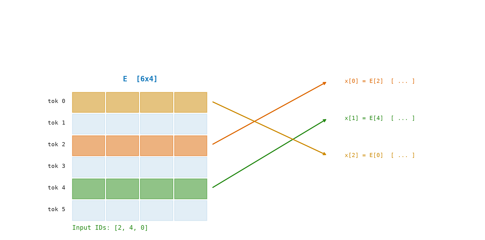
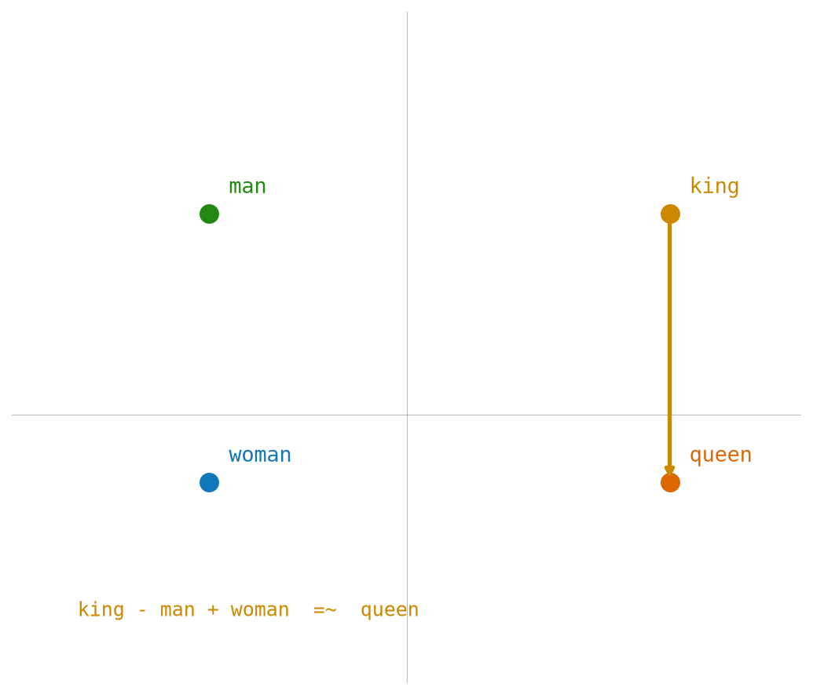

4 Embeddings — Numbers to Meaning
“Every word, once geometrified, ceases to be a label and becomes a direction.”
— Jorge Luis Borges
We have token IDs: [10, 3, 4, 8]. They are integers. The model cannot do useful math on raw integers — adding 10 + 3 gives 13, which means nothing. To do useful math, each integer needs to become a vector — a list of numbers that encodes the token’s meaning geometrically.
The mechanism is called the embedding matrix, and it is the model’s first learned representation.
4.1 The Idea
A token ID is just a number — say, 42. That integer is an address, not a meaning. You cannot do useful arithmetic on addresses: 42 + 7 = 49 tells you nothing about the relationship between the two words.
To give each token a meaning the model can actually compute with, we replace its ID with a list of hundreds of decimal numbers — a vector. Think of it like this: the model keeps a big table, one row per word in the vocabulary. When it sees token 42, it pulls out row 42 and uses those numbers as the token’s representation going forward.
The key property that makes this useful is that the table is learned. After training on billions of words, tokens with similar meanings end up with similar rows. “Cat” and “kitten” cluster together. “Run” and “sprint” are nearby. “Cat” and “justice” are far apart. The model discovers these relationships entirely from how words appear together in text — no human labels required.
This learned table is the embedding matrix, and the step that converts a sequence of IDs into a sequence of vectors is called embedding.
4.2 Why Learned Vectors?
The values in the embedding matrix are not hand-crafted. They are initialized randomly and then learned via gradient descent during training, just like any other model parameter.
The training objective is next-token prediction: given \(t_1, t_2, \ldots, t_n\), predict \(t_{n+1}\). Because the model must do this well across billions of examples, it is forced to arrange embeddings such that tokens that appear in similar contexts land near each other in the embedding space.
This produces the famous arithmetic property:
\[ \mathrm{embedding}(\mathrm{king}) - \mathrm{embedding}(\mathrm{man}) + \mathrm{embedding}(\mathrm{woman}) \approx \mathrm{embedding}(\mathrm{queen}) \]
No one programmed this. It is a geometric consequence of how the vectors were shaped by the training signal.
Math Minute — Dot Product
The dot product of two vectors \(u = [u_1,\ldots,u_n]\) and \(v = [v_1,\ldots,v_n]\) is: \(u \cdot v = u_1 v_1 + u_2 v_2 + \ldots + u_n v_n\). It is a single number. If both vectors point in the same direction, the dot product is large and positive. If they are perpendicular, it is zero. If they point opposite, it is negative. Dot product measures alignment.
4.3 The Math
Given:
- \(|V|\) = vocabulary size
- \(d\) = \(d_{\text{model}}\) (hidden dimension)
- \(E \in \mathbb{R}^{|V| \times d}\) = embedding matrix (learned)
- \(i \in \{0, \ldots, |V|-1\}\) = token ID
The embedding of token \(i\) is:
\[ e_i = E_{i,\cdot} \in \mathbb{R}^d \]
(Row \(i\) of matrix \(E\).)
For a sequence of \(T\) tokens \([i_1, \ldots, i_T]\), the embedding operation is:
\[ X = E[[i_1,\ldots,i_T], :] \in \mathbb{R}^{T \times d} \]
This is just row indexing — no multiplication. In practice it is implemented as a matrix multiplication with a one-hot vector:
\[ e_i = o_i^{\top} \cdot E, \quad \text{where } o_i \in \{0,1\}^{|V|},\quad (o_i)_j = \begin{cases} 1 & j = i \\ 0 & j \neq i \end{cases} \]
But implementations use the index directly because it is faster.
4.4 The Matrix: Worked Example
Let’s use tiny numbers: \(|V| = 5\), \(d = 4\).
Embedding matrix \(E\) (\(5\times 4\)):
col0 col1 col2 col3
tok 0: [ 0.10 -0.20 0.30 -0.40 ]
tok 1: [ 0.50 0.60 -0.70 0.80 ]
tok 2: [-0.90 0.10 0.20 -0.30 ]
tok 3: [ 0.40 -0.50 0.60 -0.70 ]
tok 4: [-0.10 0.80 -0.40 0.50 ]Input token sequence: "low lower" → token IDs [2, 3, 0] (hypothetical).
Embedding lookup:
X = E[[2, 3, 0], :]
X[0] = E[2] = [-0.90, 0.10, 0.20, -0.30] ← "low"
X[1] = E[3] = [ 0.40, -0.50, 0.60, -0.70] ← "low" (part of "lower")
X[2] = E[0] = [ 0.10, -0.20, 0.30, -0.40] ← "er"
Result X: shape [3 × 4]This \([3 \times 4]\) matrix is what flows into the next stage.
Figure Figure 4.1 shows token IDs selecting row vectors from the embedding matrix.

Semantic similarity in vector space:
If we compute the dot product of two token embeddings, we get a scalar measuring how aligned they are:
dot(E[0], E[2]) = (0.10)(−0.90) + (−0.20)(0.10) + (0.30)(0.20) + (−0.40)(−0.30)
= −0.09 − 0.02 + 0.06 + 0.12
= 0.07 (slightly positive → slight similarity)After training, semantically related tokens will have much higher dot products.
4.5 The Code: Embedding in Python
Before writing a single line of embedding logic, we name what a matrix is. A matrix is a rows-by-cols grid of numbers. We store it as a flat vector in row-major order, but nothing above this interface will ever need to know that.
def make_matrix(rows: int, cols: int, fill: float = 0.0) -> Matrix:
return [[fill for _ in range(cols)] for _ in range(rows)]
def shape(matrix: Matrix) -> tuple[int, int]:
return len(matrix), len(matrix[0]) if matrix else 0random_matrix uses Xavier initialization: it scales the random values by \(\sqrt{2/(fan_{in}+fan_{out})}\), which keeps activations from exploding or vanishing.
def random_matrix(
rows: int,
cols: int,
rng: random.Random,
scale: float | None = None,
) -> Matrix:
scale = math.sqrt(2.0 / (rows + cols)) if scale is None else scale
return [[rng.uniform(-scale, scale) for _ in range(cols)] for _ in range(rows)]The embedding of token \(i\) is literally row \(i\) of the matrix — a table lookup.
def embed_token(embedding: Matrix, token_id: int) -> Vector:
return list(embedding[token_id])A sequence of \(T\) token IDs calls for \(T\) row lookups stacked into a \([T \times d]\) matrix.
def embed_sequence(embedding: Matrix, token_ids: Sequence[int]) -> Matrix:
return [embed_token(embedding, token_id) for token_id in token_ids]The dot product \(u \cdot v = \sum_i u_i v_i\) measures geometric alignment.
# tag::vector_ops[]
# tag::add_vectors[]
def add_vectors(left: Vector, right: Vector) -> Vector:
return [a + b for a, b in zip(left, right)]
# end::add_vectors[]
# tag::scale_vector[]
def scale_vector(vector: Vector, scalar: float) -> Vector:
return [scalar * value for value in vector]
# end::scale_vector[]
# tag::vector_norm[]
def vector_norm(vector: Sequence[float]) -> float:
return math.sqrt(sum(value * value for value in vector))
# end::vector_norm[]
# tag::unit_vector[]
def unit_vector(vector: Vector) -> Vector:
return scale_vector(vector, 1.0 / vector_norm(vector))
# end::unit_vector[]
# end::vector_ops[]
# tag::dot[]
def dot(left: Sequence[float], right: Sequence[float]) -> float:
return sum(a * b for a, b in zip(left, right))
# end::dot[]
# tag::cosine_similarity[]
def cosine_similarity(left: Sequence[float], right: Sequence[float]) -> float:
return dot(left, right) / (vector_norm(left) * vector_norm(right))
# end::cosine_similarity[]Demo. Run with python3 src/python/chapter_demos.py:
def chapter_04(seed: int = 4) -> dict[str, object]:
rng = random.Random(seed)
embedding = random_matrix(100, 8, rng)
x = embed_sequence(embedding, [1, 2, 3])
return {
"sequence_shape": (len(x), len(x[0])),
"dot": dot(embedding[1], embedding[2]),
"cosine": cosine_similarity(embedding[1], embedding[2]),
}Figure Figure 4.2 shows how each token ID indexes into one row of the embedding weight matrix.
Figure Figure 4.3 shows how semantic relationships can appear as vector directions in embedding space.

4.6 Key Takeaways
- An embedding matrix \(E \in \mathbb{R}^{|V| \times d}\) maps token IDs to dense vectors.
- The embedding of token
iis rowiofE— a single lookup, no computation. - For a sequence of
Ttokens, we get a \([T \times d]\) matrixX. - The vectors are learned: training nudges similar tokens closer together.
- Semantic arithmetic (\(\text{king} - \text{man} + \text{woman} \approx \text{queen}\)) emerges from the training objective.
What’s next? We have a matrix X of shape \([T \times d]\). Each row knows what the token is, but nothing about where it sits in the sequence. Swapping two tokens would produce the same rows in a different order, which the model would treat identically. We need to inject position information — that’s Chapter 3.